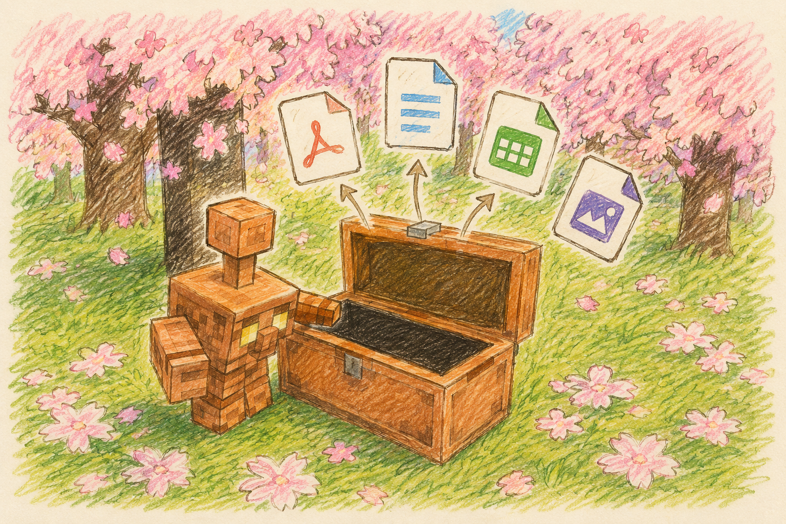

Mac のためのファイル自動整理
散らかったフォルダを、中身を読んで自動で片付け。

フォルダにファイルを入れておくだけ。AI が一つずつ中身を読んで「これは請求書」「これは写真」と判断し、 あなたが用意したフォルダへ静かに移してくれます。どこにも当てはまらないものは、無理に動かさずそのまま残します。
ダウンロードフォルダやデスクトップが、いつの間にか書類でいっぱい——そんな「あとで整理しよう」を肩代わりする道具です。
使い方はシンプルです。整理したいフォルダ（たとえば「受信箱」）を1つ決め、その中に 「請求書」「写真」「資料」のような入れ先フォルダを作っておきます。 あとは受信箱にファイルを置くだけ。copper-golem が中身を読み取り、いちばん合う入れ先へ移してくれます。
ポイントは、ファイル名ではなく中身で判断すること。 「IMG_2084.png」のような名前でも、中を見て「写真」と分かれば写真フォルダへ。 どの入れ先にも当てはまらないファイルは動かさず、なぜ分けられなかったかを一覧に書き出して教えてくれます。
中身を読む頭脳には、AI の「Claude」を使います。難しい操作は不要で、流れは4ステップだけです。
ファイルの本文やファイル名から、内容のあらましを取り出します。
用意された入れ先フォルダと、それぞれが「何を入れる場所か」を確認します。
内容にいちばん合う入れ先を、AI が確からしさ付きで選びます。
十分に確からしければ移動。自信が無ければ動かさず残します。
セットアップでは「ターミナル」を少しだけ使います。Mac に最初から入っているアプリで、 下のコマンドをコピーして貼り付け、Enter を押すだけです。一度終われば、あとは自動です。
Mac、そして AI の Claude Code（claude コマンド）が使える状態。
通知をしっかり受け取りたい場合は、あとで terminal-notifier という小さな道具も入れます。
「ターミナル」アプリを開き、次を貼り付けて実行します。
監視するフォルダなどの設定を、自分用にコピーします。
テキストエディタで ~/.config/copper-golem/config.toml を開き、
watch_roots（監視するフォルダ）を整理したい場所に変えます。
監視フォルダの中に、振り分け先を自分で作ります（最低1つ）。例：
いきなり動かさず、移動せずに判定結果だけを表示して確かめます（安全）。
結果に納得できたら、置いた瞬間に自動で整理するよう登録します。
これで完了。以降は、監視フォルダにファイルを入れるたびに自動で振り分けられます。
セットアップ後は、基本的に「フォルダにファイルを入れるだけ」。手動で操作したいときの方法も用意しています。
undo で直前の振り分けをまとめて元に戻せます。
同じ名前のファイルがあっても上書きはせず、請求書 (2).pdf のように別名で保存します。
各フォルダに「何を入れる場所か」を一言で書いた .golem.md という小さなメモを置けます。
これがあると、AI の振り分けがぐっと正確になります。
手で書いてもいいですが、フォルダにすでに入っているファイルから自動で作ることもできます。
作られた説明はあとから手で直せます。とくに「入れないもの」に 「スクリーンショットは入れない」などの条件を足すと、思いどおりに分かれやすくなります。
どの入れ先にも当てはまらず残ったファイルは、監視フォルダの中に
_未分類レポート.md という一覧として、理由つきで書き出されます。
これを見れば、「なぜ片付かないのか」がひと目で分かります。新しい入れ先フォルダを作ったり、
.golem.md の「入れないもの」を調整するヒントになります。
ファイルがすべて片付けば、このレポートは自動で消えます。
いつでも止められます。完全にやめる方法と、しばらく休ませる方法があります。
しばらく休ませたいだけなら、設定ファイルの dry_run を true にして保存します。
その間はファイルを移動せず、判定だけ行う「お試しモード」になります（保存するだけで反映され、入れ直しは不要）。
~/.config/copper-golem/config.toml で調整できます。保存するだけで次回から反映されます。基本は触らなくてOKです。
| 項目 | 意味 |
|---|---|
| watch_roots | 整理したいフォルダ。複数指定できます。 |
| dry_run | true の間は移動せず判定だけ（お試しモード）。 |
| on_no_match | 当てはまらないものの扱い。そのまま残す／専用フォルダへ集める。 |
| confidence_threshold | どれくらい確かなら動かすか。上げると慎重に、下げると積極的に。 |
| interval_seconds | 置いた瞬間に加え、一定間隔でも見回るか。 |
| enable_ocr | 画像の中の文字も読むか（やや遅くなります）。 |
| notify | 整理したときにデスクトップ通知を出すか。 |
| report_file | 未分類レポートのファイル名（"" で無効）。 |
python3 golem.py undo で、直前の振り分けをまとめて元の場所に戻せます。すべての移動は記録されています。請求書 (2).pdf のように別名で保存します。フォルダ自体も動かしません。_未分類レポート.md に理由つきで書き出されます。terminal-notifier という小さな道具が必要です（brew install terminal-notifier で入ります）。
入れたうえで「システム設定 > 通知」で許可されているかも確認してください。
watch_roots で変えられます。